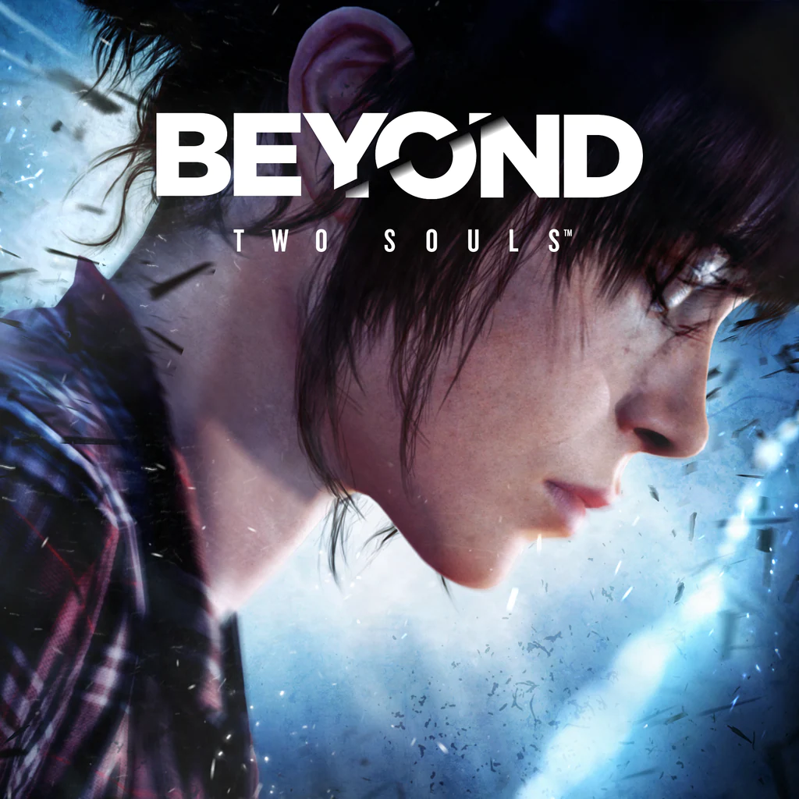

Beyond: Two Souls sleduje Jodie Holmes, dívku propojenou s tajemnou entitou Aidenem. Hráč prochází klíčovými momenty jejího života, od dětství po dospělost, a ovlivňuje její osud. Jodie čelí vládním experimentům, nadpřirozeným hrozbám a hledá své místo ve světě, zatímco se snaží pochopit spojení s Aidenem.

Death Stranding sleduje Sama Portera Bridgese, kurýra v postapokalyptickém světě, kde záhadný fenomén Death Stranding rozdělil civilizaci. Sam musí doručovat zásoby, spojovat izolované osady a čelit neviditelným bytostem BTs. Hra zkoumá témata spojení, života a smrti, zatímco Sam odhaluje pravdu o světě i sobě.

Detroit: Become Human se odehrává v roce 2038, kde androidi slouží lidem, dokud nezačnou vykazovat emoce a touhu po svobodě. Hráč ovládá tři androidy – Connora, Markuse a Karu – jejichž rozhodnutí ovlivní osud lidstva i androidů. Hra nabízí morální dilemata, větvení příběhu a otázku, co znamená být člověkem.

Firewatch je příběhová adventura sledující Henryho, který pracuje jako požární hlídač v odlehlé divočině Wyomingu. Jeho jediným spojením s okolním světem je Delilah, jeho nadřízená, se kterou komunikuje přes vysílačku. Zvláštní události narušují jeho klidnou práci a odhalují temná tajemství lesa i jeho vlastní minulosti.

Fran Bow je temná hororová adventura o mladé dívce jménem Fran, která po tragické ztrátě rodičů a duševním traumatu je umístěna do psychiatrické léčebny. Během svého putování plného podivných postav a děsivých událostí se snaží odhalit pravdu o své minulosti a uniknout z tajemného světa plného hrůz.

Hogwarts Legacy je akční RPG zasazené do 1800s v kouzelnickém světě Harryho Pottera. Hráč se ujme role studenta, který má schopnost ovládat magii, kterou ostatní kouzelníci nedokážou. Během svého studia na Bradavické škole čar a kouzel objevuje temné tajemství, které ohrožuje celý kouzelnický svět, a musí se rozhodnout, jakým způsobem tuto hrozbu čelit.

House of Ashes je hororová interaktivní adventura, která je součástí série The Dark Pictures Anthology. Příběh se odehrává během války v Iráku, kdy skupina vojáků objeví tajemnou starověkou sumerskou ruinu. Brzy zjistí, že v podzemí skrývá děsivé tajemství. Hráči musí čelit nadpřirozeným hrozbám a dělat rozhodnutí, která ovlivní osud postav.

Killer Frequency je hororová interaktivní hra, která se odehrává v 80. letech. Hráč se ujme role radiového moderátora, který se během noční směny stane nečekaným svědkem sériového vraha, který terorizuje malé městečko. Pomocí vysílačky se snaží varovat obyvatele, přičemž musí řešit různé záhady a nebezpečí, která na něj čekají.

Life is Strange 2 sleduje bratry Daniela a Sean Diaz, kteří po tragické události v Seattle musí utéct z domova a skrývat se před policií. Na cestě, plné výzev a nebezpečí, se Danielovi začnou projevovat nadpřirozené schopnosti, což komplikuje jejich situaci. Hra zkoumá témata rodiny, ztráty a dospívání, přičemž hráči musí činit rozhodnutí, která ovlivní jejich osud.

Life is Strange je příběhová adventura sledující Max Caulfield, středoškolačku, která zjistí, že má schopnost vracet čas. Poté, co se vrátí do minulosti a zachrání svou přítelkyni Chloe, začíná objevovat temné tajemství svého města Arcadia Bay. Hra zkoumá témata přátelství, volby a následků, kdy každé rozhodnutí ovlivní budoucnost.

Little Hope je hororová interaktivní adventura a součást The Dark Pictures Anthology. Příběh sleduje skupinu lidí, kteří se ocitnou ve městě Little Hope, kde jsou konfrontováni s temnou historií inkvizičních procesů a nadpřirozenými silami. Postavy musí čelit svým minulostem, tajemstvím města a děsivým bytostem, přičemž jejich rozhodnutí určují, kdo přežije.

Little Misfortune je temná interaktivní adventura, která sleduje osmiletou dívku Misfortune, která se vydává na dobrodružnou cestu do lesa, aby našla "věčnou štěstí" pro svou matku. Cestou se setkává s podivnými a děsivými postavami, které jí pomáhají, ale také jí dávají temné volby. Hra zkoumá téma dětství, osudu a morálních dilemat s nádechem černého humoru a hororu

Martha is Dead je psychologický horor, který se odehrává v Itálii během druhé světové války. Hráč sleduje příběh Giulia, která se snaží vyrovnat se smrtí své sestry Marthy. Brzy však odhalí temné a děsivé tajemství, které ji vtáhne do šílenství. Hra zkoumá témata ztráty, viny, identity a má silný psychologický náboj s hororovými prvky.

Red Dead Redemption je akční dobrodružná hra zasazená do otevřeného světa Divokého západu. Hráč se ujme role Johna Marstona, bývalého bandity, který je nucen pracovat pro vládu, aby zachránil svou rodinu. Příběh se soustředí na jeho honbu za bývalými členy jeho gangu, což ho přivádí k morálním dilematům a konfrontacím s jeho temnou minulostí.

Red Dead Redemption 2 je prequel k původní hře, který sleduje Arthura Morgana, člena gangstera Dutch van der Linde. Děj se odehrává v roce 1899, kdy gang čelí rozpadům a pronásledování ze strany zákona. Hráč prozkoumává rozsáhlý otevřený svět, čelí morálním volbám a rozhodnutím, která formují jeho osud. Hra se zaměřuje na přátelství, zradě, a boj o přežití v končícím období Divokého západu.

Road 96 je interaktivní dobrodružná hra, která sleduje příběh skupiny mladých lidí, kteří se snaží uprchnout z totalitní země, kde je vláda represivní a autoritářská. Hráči procházejí různými příběhovými liniemi a rozhodují o osudu postav, přičemž každý pokus o útěk odhaluje nové postavy, situace a volby. Hra se zaměřuje na téma svobody, revoluce a osobních rozhodnutí.

Sally Face je temná adventura, která sleduje chlapce jménem Sal Fisher, který žije v podivném a tajemstvím zahaleném světě. Sal, s tajemnou maskou na tváři, vyšetřuje záhady a nadpřirozené události, které se dějí v jeho novém domě a okolí. Hra zkoumá témata přátelství, ztráty, psychologických traumat a hororových prvků.

Stray je akční dobrodružná hra, která sleduje kočku v postapokalyptickém městě, plném zničených budov a robotických obyvatel. Hráč se ujímá role kočky, která se snaží najít cestu zpět k domovu, přičemž řeší hádanky a objevuje tajemství městské civilizace. Hra kombinuje akci, průzkum a interakci s prostředím, zatímco hráč prožívá svět z perspektivy kočky.

The Last of Us je akční adventura, která se odehrává v post-apokalyptickém světě, kde většina lidstva byla zničena virem, který proměňuje lidi v infikované monstra. Hráči sledují příběh Joela, který musí doprovodit mladou dívku Ellie na cestě přes nebezpečný svět, kde čelí nejen infikovaným, ale i nebezpečným lidským frakcím. Hra zkoumá témata přežití, přátelství a obětování.

The Quarry je interaktivní hororová adventura, která sleduje skupinu teenagerů, kteří se po konci letního tábora ocitnou v opuštěném táboře a brzy zjistí, že jsou v ohrožení. Hráči ovládají různé postavy, jejichž rozhodnutí ovlivňují, kdo přežije a jak se příběh vyvine. Hra je plná napětí, temných tajemství a hororových momentů, kde každé rozhodnutí může mít fatální následky.

The Last of Us Part II sleduje Ellie, která se po tragické události vydává na cestu pomsty. V rozpadlém světě čelí nejen nakaženým, ale i morálním dilematům a nepřátelským frakcím. Hra zkoumá cyklus násilí, ztrátu a hledání spravedlnosti, zatímco Ellie objevuje pravdu o sobě i svých rozhodnutích.

Until Dawn je hororová interaktivní hra, která sleduje osm přátel, kteří se vydají na chatu v horách, aby oslavili výročí tragické události, která se stala před rokem. Co začíná jako rekreační víkend, se rychle mění v noční můru, když začne někdo nebo něco lovit jejich skupinu. Hráči dělají rozhodnutí, která ovlivňují, kdo přežije, a jak se příběh rozvine, přičemž se setkávají s hororovými a nadpřirozenými prvky.

Left Behind je DLC k The Last of Us, které se zaměřuje na příběh Ellie a její nejlepší kamarádky Riley během jejího pobytu v post-apokalyptickém světě. Příběh se odehrává před událostmi hlavní hry, kdy Ellie a Riley prozkoumávají opuštěné město, čelí nebezpečným nástrahám a vytvářejí hluboký emocionální vztah, který ovlivní Elliein další osud.